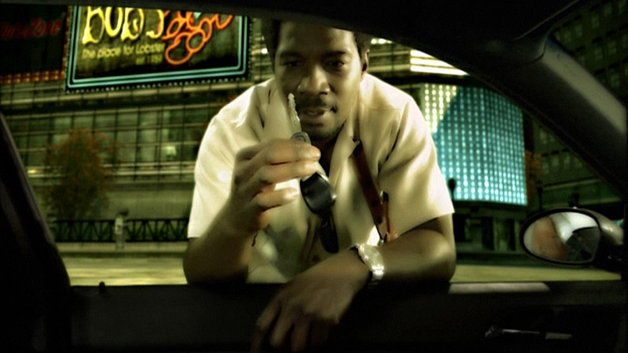
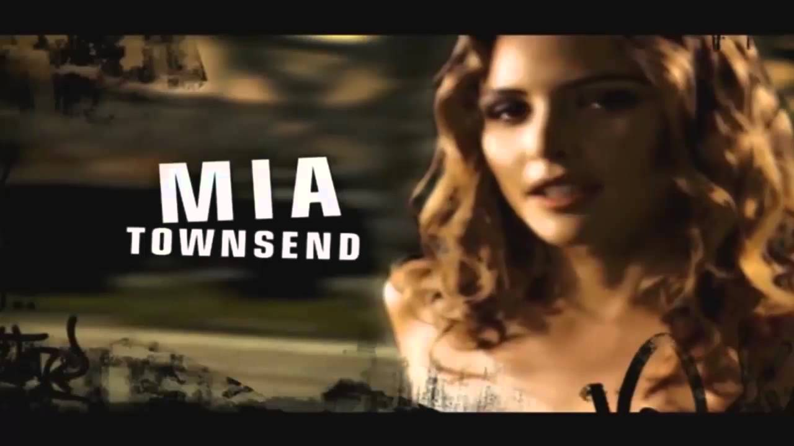
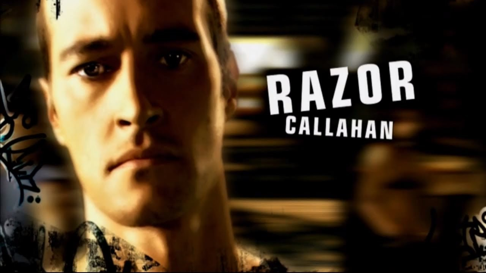
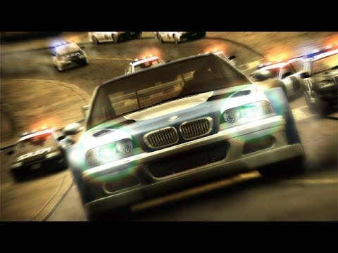
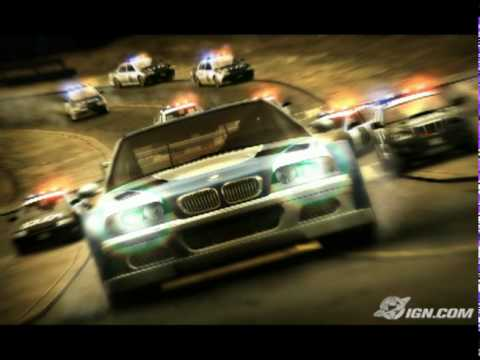

Het spel begint met de hoofdpersoon van de game, de onbekende speler, die met de nummer 15 van de Black List een straatrace aangaat. Onderweg krijgt de speler het bericht van ene Mia, waarvan men later achterkomt dat het een vriendin van de speler is, dat de speler een heel oliespoor bij de start heeft achtergelaten. Dit is een voorbeschouwing want de race eindigt in een open einde. Vervolgens wordt er in een filmpje getoond wat er voor de race gebeurd was.
 De dag dat de speler aankomt in Rockport, 6 dagen voor de eerste race van het spel, wordt hij aangehouden door een politieauto. Hierin zitten Sergeant Cross en zijn elegante assistente. Zij willen de auto in beslag nemen en de speler arresteren maar worden hiervan onthouden als zij opgeroepen worden door medeagenten om zich bij een achtervolging van meerdere racers te voegen. Sergeant Cross vertrekt met de waarschuwing "de straatraces in Rockport zijn voorbij".
Vier dagen voor de race met Razor zwerft de speler op straat op zoek naar een race. Hij wordt uitgedaagd door Ronnie Mc Crea, een handlanger van Razor. Wanneer de speler deze race wint komen de wagens van beide aan bij de scheepswerf waar Razor en zijn handlangers rondhangen. Hier ontstaat een confrontatie tussen de speler en Razor. Maar Mia komt opdagen en neemt het voor de speler op. Zij beweert dat de speler iedereen eruit kan racen. Razor die de speler minacht zet 5000 dollar op zijn vriend Toru Sato. Mia verhoogt dit tot 10.000, waarop Razor de politie waarschuwt voor de race, zodat deze gevaarlijker en dus interessanter wordt. Ook deze race moet de speler zien te winnen, zoals eerder bij Ronnie.
Aan het eind van deze gewonnen race tegen Toru en de twee anderen komt ene Rog opdagen. Hij lijkt de racer te kennen al wordt niet duidelijk waarom. Na een race met Rog en twee anderen gewonnen te hebben komt Razor op dagen om tegen de speler te rijden. Deze race eindigt met zoals eerder verteld een bericht van Mia dat de auto van de speler een heel oliespoor achterlaat. De auto begint te sputteren en stopt met rijden. Razor wint de race en de speler verliest zijn auto. Het is namelijk zo dat wanneer men een Black List racer uitdaagt men wel zijn auto moet inzetten.
Wanneer Razor de auto heeft overgenomen, belt Razor de politie, die er ook meteen aan komt rijden. Meteen vluchten alle aanwezige racers weg. Alleen de speler blijft achter zonder een wagen. Daar wordt hij opgepakt door Sergeant Cross en zijn assistente. Hij komt in de gevangenis terecht maar wordt later vrij gesproken wegens gebrek aan bewijs. Men kan iemand namelijk niet veroordelen voor straatracen als deze geen auto heeft.
 Mia wacht de speler buiten het politiebureau op en vertelt hem dat Razor de auto van de speler had gesaboteerd om zo de race te winnen. Met dezelfde gewonnen auto, een BMW M3 GTR, heeft hij vervolgens iedereen op de Black List verslagen en is hij nu Nummer 1 op de Black List, The Most Wanted/De meest gezochte. Hier begint het spel echt. Mia gaat de speler helpen om de BMW terug te krijgen. Hij kan tussen drie auto’s kiezen en moet hiermee verschillende races winnen en mijlpalen voltooien om daarna de nieuwe nummer 15 op de Black List te verslaan: Sonny. Gedurende de kruistocht van de speler om zijn BMW terug te winnen krijgt hij hulp van Mia en Rog, die hem uitleg geven over hoe de Rockport politie te werk gaat. Ook neemt Razor geregeld contact op met de speler, wat begint als treiterij worden naarmate hij dichter bij zijn race met Razor komt. beschuldigingen dat de speler met de politie zou werken.
 Zo gaat de speler de gehele Blacklist af. Een voor een verslaat deze zijn rivalen en komt uiteindelijk bij de nummer 1: Razor. Na Razor verslagen te hebben komt de confrontatie waarin Razor weigert de BMW M3 GTR af te staan, Mia pakt de sleutels van de BMW waarmee Razor de speler uit staat de dagen snel uit zijn handen.Razor probeert Mia de sleutels weer af te pakken maar onverwacht weet Mia hem op de grond te gooien. Als Razors volgelingen aan komen snellen laat ze een wapen zien en deze deinsen achteruit.
 Plotseling komt de politie opdagen, en terwijl Razor en zijn volgelingen worden opgepakt weet de speler te ontsnappen. Mia wist de autosleutels van de BMW nog te overhandigen aan de speler. Dan komt Sergeant Cross in beeld en deze komt in de veronderstelling dat de meest gezochte straatracer van Rockport ontsnapt is. Nu blijkt dus dat Mia de speler wilde verraden aan de politie maar dit deed ze uiteindelijk niet. De meest waarschijnlijke reden voor dit verraad was dat Mia haar wagen door de politie in beslag was genomen en dat ze door te infiltreren, en de speler aan te geven, haar wagen terug kon krijgen. De beschuldigingen van Razor richting de speler blijken terecht. Door het feit dat Cross de speler niet heeft opgepakt raakt hij zo gefrustreerd dat hij zijn assistente opdracht geeft de hele politieafdeling van Rockport achter de speler aan te sturen.
Zo eindigt de confrontatie met Razor in een heftige politieachtervolging waarin Sergeant Cross iedere beschikbare eenheid inzet. Het Heatlevel is nu 6 en er is geen enkele mogelijkheid om te ontsnappen. Tot de speler het bericht van Mia krijgt dat hij kan ontsnappen via de oude brug, die aan het einde ligt van een weg die eerst afgesloten was van de rest van het spel. Na deze brug overgesprongen te zijn weet te speler te ontsnappen aan de agenten. Alleen Sergeant Cross weet de sprong te maken en zo gaat de achtervolging verder... Hier begint het verhaal van Need for Speed: Carbon. na deze gewaagde ontsnapping zet Sergeant Cross een arrestatieorder voor de speler neer, op federaal niveau.
